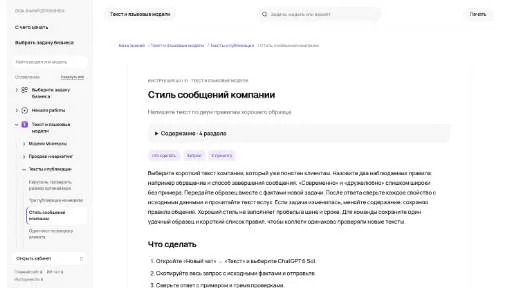

МолекулаАгрегаторы нейросетей
Молекула объединяет модели для текстов, изображений, видео и музыки. В одном аккаунте можно подобрать инструмент под этап работы, сохранить инструкции проекта и использовать готовые роли.
К задаче в МолекулеРаздел «Тексты и контент»: варианты ИИ для этой задачи, описания возможностей и переходы к обзорам. Сравните несколько решений на одинаковом примере.
Подготовьте правила голоса бренда на примерах ваших сообщений: тон, допустимые слова и способ обращения. Инструкция Молекулы помогает работать со стилем; проверьте правила на реальном ответе клиенту, сохранив известные условия и смысл предложения.
По этим сообщениям подготовь правила стиля нашей мастерской. Нужны тон, обращения и примеры замены канцелярита. Сохраняй условия услуги, не превращай вежливость в обещание результата или неизвестного срока.

Молекула объединяет модели для текстов, изображений, видео и музыки. В одном аккаунте можно подобрать инструмент под этап работы, сохранить инструкции проекта и использовать готовые роли.
К задаче в Молекуле«Amazon Titan» готовит текстовый черновик по условиям задачи.
«Blend AI» представлен в разделе «Изображения». При выборе проверьте нужную операцию и условия работы с результатом.
«StealthGPT» проверяет признаки происхождения или заимствования текста. «StealthGPT» также готовит текстовый черновик по условиям задачи.
Для «Thisworddoesnotexist» сначала определите свою задачу и требуемый результат. Карточка относится к направлению «Тексты и контент».
Для «Verb AI» сначала определите свою задачу и требуемый результат. Карточка относится к направлению «Тексты и контент».
Сравнивать «Photo Journey Ai» с другими инструментами раздела «Тексты и контент» удобнее на одинаковом исходном материале.

ProWritingAid относится к инструментам, которые помогают превращать материалы в рабочие заметки. Ещё одно направление работы: сокращать материал до основных положений.
Legacies подготавливает персональные некрологи средствами языковой модели ИИ. Пользователь может задавать тон и добавлять свои изображения. Продукт также представлен для специалистов сопровождения и похоронных организаций, связывая подготовку памятного текста и его оформление для выбранного способа представления людям.
«Text Summarizer AI» готовит текстовый черновик по условиям задачи. Дополнительно «Text Summarizer AI» подготавливает сжатое изложение исходного содержания.
«AlphaNotes» помогает подготовить персонализированный видеоматериал. «AlphaNotes» также подготавливает сжатое изложение исходного содержания.
«BypassAI (bypassai.io)» перерабатывает формулировки написанного текста.
Для «FreeWilly 2» сначала определите свою задачу и требуемый результат. Карточка относится к направлению «Тексты и контент».
«One Click Human» перерабатывает формулировки написанного текста.
Сравнивать «OpenAI in Spreadsheet» с другими инструментами раздела «Тексты и контент» удобнее на одинаковом исходном материале.
«summarygenerator AI» представлен в разделе «Тексты и контент». При выборе проверьте нужную операцию и условия работы с результатом.
«AltText AI» помогает с задачами поискового продвижения.
«INK» готовит визуальные материалы по заданию. «INK» также помогает с задачами поискового продвижения.
Для «Txt Muse» сначала определите свою задачу и требуемый результат. Карточка относится к направлению «Тексты и контент».
Alle-AI предоставляет общий способ обращаться к нескольким генеративным моделям и сравнивать их результаты. Поддерживаются текстовые задачи и создание изображений. Платформа предназначена для сопоставления вариантов одной работы, когда пользователь рассматривает разные ответы и выбирает подходящую подачу, не считая согласие моделей доказательством достоверности содержимого.
«TinyWow (tinywow.com)» представлен в разделе «Тексты и контент». При выборе проверьте нужную операцию и условия работы с результатом.
UBIAI помогает размечать текстовые материалы для проектов обработки естественного языка. В наборе предусмотрены распознавание текста, аннотации на разных языках и маркировка с участием модели. Инструмент ориентирован на выделение и категоризацию фрагментов содержимого, где исходный текст становится подготовленными данными для дальнейшей работы над NLP-задачей.
«Sassbook AI Writer» готовит текстовый черновик по условиям задачи.
«StudyCrumb» перерабатывает формулировки написанного текста.
«Thisfoodblogdoesnotexist» готовит материалы для указанных письменных форматов.
Сравнивать «Camira» с другими инструментами раздела «Тексты и контент» удобнее на одинаковом исходном материале.
«LEAi» работает с учебными курсами.
Сравнивать «Alt Text Generator» с другими инструментами раздела «Тексты и контент» удобнее на одинаковом исходном материале.
«Songmeaning» представлен в разделе «Тексты и контент». При выборе проверьте нужную операцию и условия работы с результатом.
«StoryGen» помогает составить черновик повествования.
Сравнивать «One AI» с другими инструментами раздела «Аудио (голос и музыка)» удобнее на одинаковом исходном материале.

Rytr предлагает подготовку черновиков под заданный тип текста. Краткий бриф помогает получить материал, который затем можно редактировать под адресата.
«Paraphrasing Tool» проверяет признаки происхождения или заимствования текста. Дополнительно «Paraphrasing Tool» перерабатывает формулировки написанного текста.
PromptLoop подключает модели ИИ к Google Sheets и Excel. Предусмотрены преобразование текста, выделение сведений и обобщение содержимого, а также обучение модели под собственную задачу. Инструмент связывает табличную работу с языковой обработкой, позволяя использовать готовые либо специально настроенные модели в этом окружении.
«Thundercontent» представлен в разделе «Тексты и контент». При выборе проверьте нужную операцию и условия работы с результатом.
Страница 1 из 1